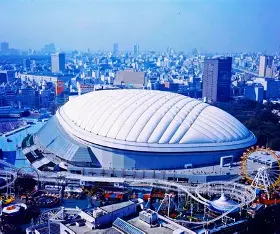
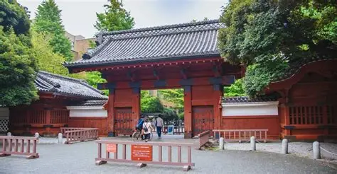

文京區位於東京23區中央偏北，聚集了東京大學等多所知名學府與日式庭園，是充滿書香氣息與寧靜氛圍的文教區。

東京巨蛋城
日本第一座巨蛋型球場，也是舉辦大型演唱會與棒球賽事的聖地，周邊結合了遊樂園與購物中心，非常熱鬧。

東京大學（赤門與安田講堂）
日本最高學府，校園內保留許多歷史悠久的紅磚建築與銀杏大道，著名的「赤門」與「安田講堂」是必拍地標。
文京區位於東京23區中央偏北，聚集了東京大學等多所知名學府與日式庭園，是充滿書香氣息與寧靜氛圍的文教區。

日本第一座巨蛋型球場，也是舉辦大型演唱會與棒球賽事的聖地，周邊結合了遊樂園與購物中心，非常熱鬧。

日本最高學府，校園內保留許多歷史悠久的紅磚建築與銀杏大道，著名的「赤門」與「安田講堂」是必拍地標。